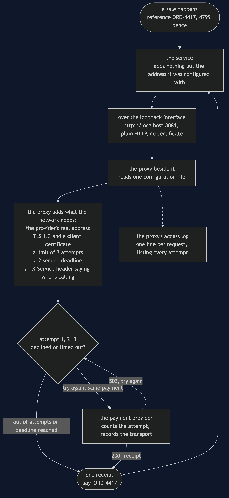

Sidecar Pattern — Data Flow Diagram
One payment, followed from the moment the shop decides to take it to the moment a receipt comes back, with a note at every hop saying what was added to the data and who added it. The architecture diagram says what is running; this one says what moves between the boxes and how it changes on the way.
Follow the left-hand column down and then back up. The shop hands over a reference and an amount in pence — a few dozen bytes describing a sale — and that is the last the service knows about it. Everything that gets added between there and the supplier is a fact about a network: which address, over what transport, how many times, how long to wait, and who is asking. All of it is added by the proxy, and none of it is visible to the service that started the payment.
The single most important part of the picture is the loop in the middle. Three attempts leave the proxy and one answer goes back to the service. The service made one call and received one answer, and there is no place in its code where the other two attempts could be observed, counted or logged. A service cannot see the retries made on its behalf, which is exactly why the demo asks the provider for the tally rather than the caller.

The three things this flow proves
The payment data itself never changes. The reference and the amount that leave the service are the reference and the amount the provider records. Everything the proxy adds is envelope, not content. That is the test for whether a concern may move next door at all: if the box would have to understand what a refund is in order to do its job, it is in the wrong place.
The transport is added after the service is finished with it. The service sends plain HTTP with no keystore, no trust store and no protocol list anywhere in its configuration, and the provider — which accepts TLS 1.3 and nothing else — records the call as TLS 1.3. In the version without a sidecar, that certificate profile was one of sixteen copies scattered across four repositories.
One arrow out, one arrow back, three attempts in between. The retry loop is entirely inside the proxy box. Delete the proxy and the loop goes with it, which is the cost the demo's sixth act makes you look at: a healthy service on a healthy network that cannot take a single payment, with zero attempts reaching the provider, because the request never left the machine.
Where the data goes that is not the payment
The dotted arrow to the access log is the pattern's consolation prize. Because every payment for every service now passes through the same kind of box, reading the same configuration, the record of what happened is in one format whoever made the call. One log line lists each attempt, the status it got and how long it took, and nobody had to persuade four teams to agree on a logging format to get it.